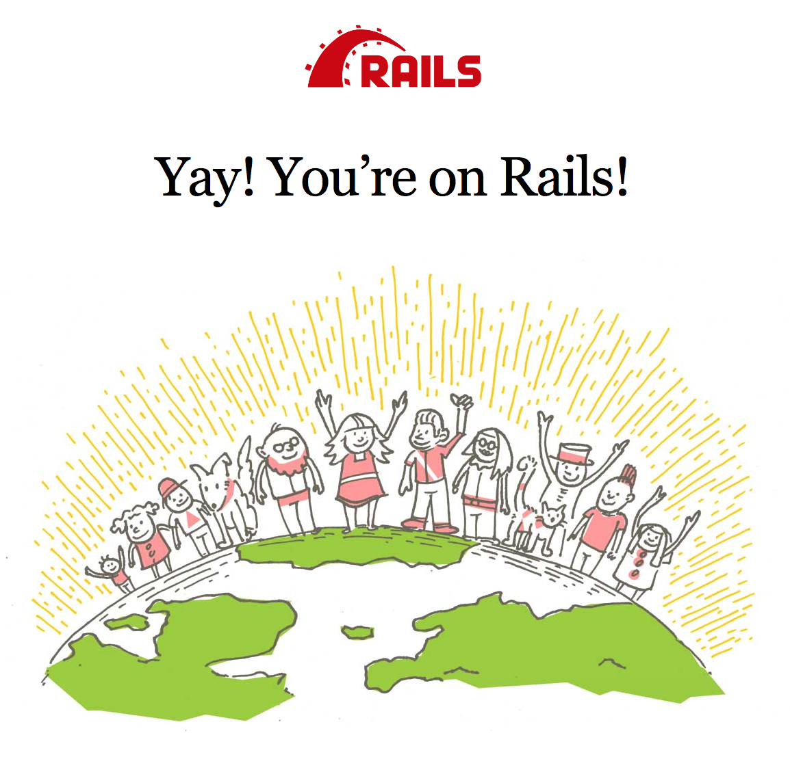
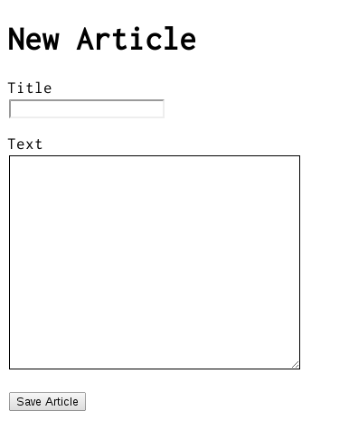
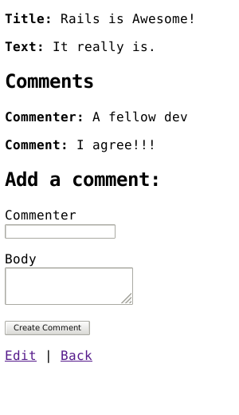

1 이 가이드의 전제 조건
이 가이드는 레일스 애플리케이션을 제로부터 만들고 싶은 초심자를 대상으로 합니다. 다시 말해, 독자가 레일스에 대한 경험이 없다는 것을 전제로 하고 있습니다. 그리고 이 문서를 최대한 활용하기 위해 아래의 소프트웨어가 설치되어 있고, 사용 가능한 상태이어야 합니다.
- 루비 2.2.2 이상
- 윈도우를 사용한다면 올바른 버전의 개발 도구를 설치하세요.
- RubyGems 패키징 시스템. 이것은 루비 1.9 이상을 설치한다면 자동적으로 설치 됩니다. RubyGems에 대한 자세한 설명은 RubyGems 가이드를 참조해주세요.
- SQLite3 데이터베이스가 설치되어 있고, 정상적으로 동작하는 상태일 것.
루비온레일스 (이하 레일스) 란 프로그래밍 언어인 루비 위에서 동작하는 웹 애플리케이션 프레임워크입니다. 루비를 전혀 사용해보지 않았다면, 레일스를 배우는 것은 꽤 어려운 작업이 될 것입니다. 루비를 배우기 위한 좋은 온라인 자료 목록들은 많이 있으므로, 그 중에서 아래의 몇 가지를 소개합니다.
이것들은 어느 것이든 잘 구성되어있습니다만, 그 중에는 루비 1.6 버전 등으로 설명하는 오래된 것들도 있으므로 주의해주세요. 또한 1.8 버전을 대상으로 하는 것이 많으며, 레일스에서 자주 사용되는 새로운 문법을 포함하고 있지 않을 수 있습니다.
2 레일스란 무엇인가요?
루비온레일스 (이하 레일스) 란 루비로 쓰여진 웹 애플리케이션 프레임워크 입니다. 레일스는 개발자가 웹 애플리케이션을 개발하기 시작할 때 필요할 것으로 생각되는 작업이나 리소스를 가정하고 미리 준비하여 웹 애플리케이션을 쉽게 작성할 수 있도록 설계되어 있습니다. 다른 언어로 작성된 수많은 웹애플리케이션 프레임워크와 비교해서, 애플리케이션을 작성할 때 상대적으로 더 적은 코드로, 더 많은 기능을 구현할 수 있습니다. 레일스 경험이 긴 개발자들에게서, 레일스 덕분에 웹애플리케이션의 개발이 무척 편해졌다는 많은 의견을 받고 있습니다.
레일스는 최선의 개발 방법을 하나로 가정하는, 어떤 의미에서는 대담한 결정을 기반으로 설계되어 있습니다. 그래서 레일스는 어떤 작업을 할 때, 이 작업을 수행하는 최선의 방법을 한 가지라고 가정하고, 이 가정에 맞는 개발 방식을 전폭적으로 지원합니다. 다시 말하자면, 여기서 가정된 이상적인 개발 방식에 맞지 않는 다른 개발 방법으로는 작업하기 어렵게끔 되어 있습니다. 이 'The Rails Way'라고 불리우는 방법을 배운 사람은 개발의 생산성이 크게 향상된다는 것을 느낄 수 있을 것입니다. 따라서, 레일스 개발에 있어 다른 언어환경에서 써왔던 종래의 개발방식을 고집하고, 다른 곳에서 배운 패턴을 억지로 적용하려고 하면, 개발이 재미없어질 겁니다.
레일스의 철학에는 중요한 기본 이념이 두 가지 있습니다.
- 같은 것을 반복하지 말 것(Don't Repeat Yourself: DRY): DRY는 소프트웨어 개발 원칙 중의 하나이며, '시스템을 구성하는 지식의 모든 컴포넌트는 항상 하나여야 하며, 명확하고, 신뢰할 수 있는 형태로 표현하지 않으면 안된다' 라는 의미입니다. 반복적인 코드를 철저하게 피하는 것으로, 코드를 유지보수하기 쉽게하고, 간단히 확장할 수 있게 되며, 무엇보다 버그를 줄일 수 있습니다.
- 설정보다 규정을 우선한다(Convention Over Configuration): 레일스에서는 웹 애플리케이션에서 실행될 다양한 기능들을 실현하기 위한 최선의 방법을 명확히 구상하고 있으며, 웹 애플리케이션의 각종 설정에 대해서도 기존의 경험이나 관습에 기초해, 각 설정들의 기본값을 정해두고 있습니다. 이렇듯 어떤 의미로는 독단적으로 결정된 기본값 덕분에, 개발자의 모든 의견을 반영하기 위해서 너무 자유롭게 되어있는 웹 애플리케이션처럼, 개발자가 설정파일을 설정하느라 끝없이 고생할 필요가 없습니다.
3 레일스 프로젝트 새로 작성하기
이 가이드를 활용하기 위한 최선의 방법은 이하의 순서를 말 그대로 하나씩 실행하고, 순서를 하나라도 빼먹지 않는 것입니다. 빼먹는 부분이 있으면, 그 다음의 순서가 기대한 대로 동작하지 않을 가능성이 있습니다.
이 가이드를 잘 따라가면, blog라는 무척 간단한 블로그 프로젝트를 작성할 수 있습니다. 레일스 애플리케이션을 작성하기 전에 레일스 본체가 설치되어 있는 지를 확인해주세요.
이하의 예시에서는 Unix계열의 OS의 프롬프트라는 의미로 '$' 기호를 사용하고 있습니다만, 이것은 커스터마이즈 가능하며, 환경에 따라서는 다른 기호일 수도 있습니다. Windows에서는 c:\source_code> 처럼 표시됩니다.
3.1 레일스 설치
터미널(커맨드 프롬프트라고도 부릅니다) 창을 열어주세요. Mac OS X의 경우, 터미널(Terminal.app)이라는 이름의 애플리케이션을 실행합니다. 윈도우의 경우 [시작] 메뉴에서 [파일명을 지정해서 실행] 을 클릭하고 'cmd.exe'를 입력합니다. $로 시작하는 부분은 커맨드 명령이므로 이것들을 커맨드 라인에 입력해서 실행해주세요. 계속해서 현재 설치되어있는 루비의 버전이 최신인지를 확인해주세요.
$ ruby -v ruby 2.3.0p0
루비나 루비온레일스를 빠르게 설치하기 위한 도구가 다수 존재합니다. Windows 사용자의 경우에는 Rails Installer를 사용해주세요. Mac OS X 사용자는 Tokaido를 사용해 주세요. 그 이외의 OS에서의 설치 방법은 ruby-lang.org를 참고해주세요.
많은 Unix계열 OS에는 사용 가능한 SQLite3 버전이 포함되어있습니다. Windows 사용자나 그 이외의 환경이신 분은 SQLite3의 설치방법을 참조해주세요. 올바르게 설치되었는지, PATH 환경변수가 잘 설정되어 있는지도 확인해주세요.
$ sqlite3 --version
위의 코드를 실행하는 것으로 버전을 확인할 수 있습니다.
레일스를 설치할 때에는 gem install 명령을 실행합니다. 이 명령어는 RubyGems에 의해 제공됩니다.
$ gem install rails
이하의 명령을 실행하여 레일스가 정상적으로 설치되었는지 확인할 수 있습니다.
$ rails --version
"레일스 5.0.0"처럼 출력된다면 다음으로 넘어갈 수 있습니다.
3.2 블로그 애플리케이션 생성하기
레일스에는 제너레이터라는 다수의 스크립트가 들어있으며, 이것들이 특정 태스크를 시작하기 위해 필요한 것들을 자동적으로 생성해주므로, 개발이 용이해집니다. 이 중에서 신규 애플리케이션 작성용 제너레이터를 사용해봅시다. 이것을 실행하면 레일스 애플리케이션의 기본적인 부분을 생성해주므로 개발자가 스스로 그것들을 작성할 필요가 없습니다.
터미널을 열고, 레일스 파일을 생성하고 싶은 폴더에 이동해서 다음을 입력합니다.
$ rails new blog
이것으로, Blog라는 이름의 레일스 애플리케이션이 blog 폴더에 생성되어, Gemfile이라는 파일에 지정되어있는 잼 파일이 bundle install 명령에 의해서 설치됩니다.
Linux를 위한 윈도우 서브 시스템을 사용하고 있다면, 파일 시스템 통지 기능이 올바르게 동작하지 않는 문제가 있습니다. 이 때문에 spring과 listen 잼을 사용할 수 없으므로, 다음의 명령을 통해 프로젝트를 생성해주세요. rails new blog --skip-spring --skip-listen
rails new -h 를 실행하면, 레일스 애플리케이션 빌더로 사용 가능한 모든 명령 옵션을 확인할 수 있습니다.
블로그 애플리케이션을 생성했다면 그 폴더 안으로 이동합니다.
$ cd blog
blog 폴더에는 많은 파일과 폴더가 생성되어 있으며, 이것들이 레일스 애플리케이션을 구성합니다. 이 튜토리얼에서는 대부분의 작업을 app 폴더에서 진행합니다만, 레일스가 생성한 파일과 폴더에 대해서 간단하게 설명하고 넘어가겠습니다.
| 파일/폴더 | 목적 |
|---|---|
| app/ | 여기에는 애플리케이션의 컨트롤러, 모델, 뷰, 헬퍼, 메일러, 애셋이 위치하고 있습니다. 이후, 가이드에서는 기본적으로 이 폴더를 중심으로 설명을 진행합니다. |
| bin/ | 여기에는 애플리케이션을 기동하거나, 배포하기 위한 레일스 스크립트 등의 스크립트 파일들이 포함되어 있습니다. |
| config/ | 애플리케이션의 설정 파일(라우팅, 데이터베이스 등)이 위치하고 있습니다. 자세한 내용은레일스 애플리케이션 설정하기 를 참조해주세요. |
| config.ru | 애플리케이션 기동시에 필요한 Rack 기반 서버 용 설정 파일입니다. |
| db/ | 현 시점의 데이터베이스 스키마와 데이터베이스 마이그레이션 파일이 들어있습니다. |
| Gemfile Gemfile.lock |
레일스 애플리케이션에서 필요한 Gem들의 의존 관계를 기술되어 있습니다. 이 2개의 파일은 Bundler에서 사용됩니다. Bundler에 대한 자세한 설명은 Bundler 웹사이트(한국어 번역)를 참조해주세요. |
| lib/ | 애플리케이션에서 사용하는 확장 모듈이 들어갑니다. |
| log/ | 애플리케이션의 로그를 포함합니다. |
| public/ | 이 폴더의 밑에 있는 파일들은 외부(인터넷)에서 직접 참조할 수 있습니다. 정적인 파일이나 컴파일된 애셋들이 이 곳에 위치하게 됩니다. |
| Rakefile | 이 파일에는 커맨드 프롬프트에서 실행 가능한 작업(Task)들이 기술되어 있습니다. 여기에서의 작업이란, 레일스 컴포넌트에 대한 작업을 의미합니다. 독자적인 Rake Task를 정의하고 싶은 경우에는 Rakefile에 직접 작성하게 되면 해당 작업이 너무 많은 권한을 가지기 때문에, 가급적이면 lib/tasks 폴더에 Rake용 파일을 추가해주세요. |
| README.md | 애플리케이션의 개요를 설명하는 매뉴얼을 여기에 작성합니다. 이 파일에는 애플리케이션의 설정방법 등을 작성하여, 이 문서만 읽으면 누구라도 애플리케이션을 구축할 수 있도록 해야합니다. |
| test/ | Unit테스트, 픽스쳐 등의 테스트 관련 파일들을 가집니다. 테스트에 대해서는 레일스 애플리케이션을 테스트하기를 참조해주세요. |
| tmp/ | 캐시, pid, 세션 파일 등의 임시 파일이 포함되는 폴더입니다. |
| vendor/ | 서드 파티에 의해 작성된 코드는 모두 이곳에 넣습니다. 일반적인 레일스 애플리케이션이라면 gem 파일도 이 곳에 두게 됩니다. |
4 안녕, 레일스!
우선 화면에 무언가 띄우는 것부터 시작해봅시다. 이를 위해서는 레일스 애플리케이션 서버를 기동해야 합니다.
4.1 웹서버 시작하기
좀 전에 작성한 레일스 애플리케이션은 이미 곧바로 실행할 수 있는 상태입니다. 웹 애플리케이션이 개발용 PC에서 실제로 동작하는지 확인해봅시다. blog 폴더에 이동해서 아래의 명령을 실행합니다.
$ bin/rails server
윈도우를 사용하고 있다면 스크립트 파일의 경로를 bin에 저장되어 있는 루비에게 넘겨줘야 합니다. e.g. ruby bin\rails server.
CoffeeScript를 JavaScript로 컴파일하기 위해서는 Javascript 런타임 라이브러리가 필요합니다. 만약 설치되어 있지 않다면, execjs 에러가 발생합니다. Mac OS X나 Windows에는 Javascript 런타임 라이브러리가 포함되어 있습니다. 레일스가 생성하는 Gemfile에는 therubyracer라는 잼이 주석이 되어있는 상태로 포함되어 있으며, 필요하다면 이 부분에서 주석을 지우고 해당 잼을 활성화 시킬 수 있습니다. therubyrhino는 JRuby 유저들에게 추천되는 런타임 라이브러리이며, JRuby 환경이라면 신규 애플리케이션 생성 시에 Gemfile에 기본값으로 추가됩니다. 지원되는 런타임 라이브러리에 대한 자세한 설명은 ExecJS에서 확인 가능합니다.
이 명령은 레일스와 함께 배포되고 있는 Puma라는 웹서버를 실행합니다. 웹 애플리케이션이 동작하고 있는지를 확인하기 위해서는 브라우저를 열고 http://localhost:3000 에 접속해주세요. 다음과 같은 레일스 기본 정보 페이지가 표시됩니다.

웹서버를 정지하려면 실행되고 있는 터미널 창에서 Ctrl + C를 눌러주세요. 커맨드 프롬프트의 커서가 다시 표시되면 서버가 정지된 것입니다. Mac OS X를 포함한 많은 Unix계열의 OS에서는 프롬프트로서 달러 기호 $가 사용되고 있습니다. 보통 레일스의 개발모드에서는 파일을 변경하더라도 서버를 재기동할 필요가 없습니다. 파일 변경은 자동적으로 서버에 반영됩니다.
레일스의 초기화면인 'Welcome aboard'페이지는 새 레일스 애플리케이션의 스모크 테스트 로서 사용됩니다. 이 페이지가 표시된다면, 서버가 정상적으로 동작하는 것까지 확인되었다는 의미입니다.
4.2 레일스에서 "Hello" 출력하기
레일스에서 "Hello"를 출력하기 위해서는 최소한 컨트롤러 와 뷰 가 필요합니다.
컨트롤러는 애플리케이션에 대한 특정 리퀘스트를 받아 처리하는 역할입니다. 라우팅 은 리퀘스트를 어떤 컨트롤러에게 보내줄 것인가를 결정하는 일입니다. 1개의 컨트롤러에 대해서 다수의 라우팅을 설정하는 것은 자주 있는 일입니다. 그리고 컨트롤러에는 몇가지의 액션 이 있습니다. 여러 개의 다른 라우팅을 각각 다른 액션에 설정할 수 있습니다. 각각의 액션은 필요한 정보를 모아서 뷰에 보내주게 됩니다.
뷰의 역할은 받은 정보를 사용자가 읽을 수 있는 형태로 표시하는 것입니다. 여기에서 주의해야 하는 부분은, 필요한 정보를 모으는 것은 컨트롤러 이지, 뷰가 아니라는 점입니다. 뷰는 컨트롤러가 작성한 정보에 대해서 다른 여분의 작업 없이 출력해야 합니다. 뷰 템플릿에서 사용 가능한 언어는 기본으로 eRuby(ERB, 또는 Embedded Ruby라고도 불립니다)입니다. ERB로 작성된 코드는 사용자에게 보여지기 전에 리퀘스트 사이클에서 레일스에 의해 처리됩니다.
컨트롤러를 새로 작성하기 위해서는 컨트롤러 제너레이터를 사용합니다. 여기에서는 "index"라는 액션을 가지는 "Welcome" 컨트롤러를 생성하도록 합니다.
$ bin/rails generate controller Welcome index
레일스는 지정한대로 컨트롤러를 생성하고, 관련된 파일이나 라우팅도 설정해줍니다.
create app/controllers/welcome_controller.rb route get 'welcome/index' invoke erb create app/views/welcome create app/views/welcome/index.html.erb invoke test_unit create test/controllers/welcome_controller_test.rb invoke helper create app/helpers/welcome_helper.rb invoke assets invoke coffee create app/assets/javascripts/welcome.coffee invoke scss create app/assets/stylesheets/welcome.scss
이 중에서 가장 중요한 것은 당연히 컨트롤러입니다. welcome 컨트롤러는 app/controllers/welcome_controller.rb에 생성되며, 대응하는 뷰가 app/views/welcome/index.html.erb에 생성됩니다.
텍스트 에디터에서 app/views/welcome/index.html.erb를 열어봅시다. 파일의 내용물을 전부 삭제하고 아래의 한 줄로 변경해주세요.
<h1>Hello, Rails!</h1>
4.3 애플리케이션의 첫 페이지 설정하기
이상으로 컨트롤러와 뷰가 생성되었습니다. 레일스에서 "Hello, Rails!"를 출력시켜보죠. 여기에서는 사이트의 기본 URL인 http://localhost:3000 에 접속했을 때 이 페이지가 표시되도록 할 겁니다. 현 시점에서 기본 URL에서는 "Welcome aboard"가 표시되므로 이것을 변경합시다.
Rails에 표시하고 싶은 실제 첫 페이지의 위치를 지정합니다.
에디터에서 config/routes.rb를 열어주세요.
Rails.application.routes.draw do get 'welcome/index' # For details on the DSL available within this file, see http://guides.rubyonrails.org/routing.html end
위는 애플리케이션의 라우팅 파일 의 내용입니다. 외부에서의 요청을 어떻게 각 컨트롤러와 액션에 보낼 것인지를 DSL (domail-specific language)라는 특수한 언어를 사용해서 기술합니다. 이 파일에서 root 'welcome#index' 를 추가합시다.
Rails.application.routes.draw do get 'welcome/index' root 'welcome#index' end
root 'welcome#index'라고 작성하는 것으로, 레일스에게 애플리케이션의 기본
URL에 대한 접속 요청을 welcome 컨트롤러의 index 액션으로 보내라고 지시할 수
있습니다. 이와 같이 get 'welcome/index'는
http://localhost:3000/welcome/index라는 요청을 welcome 컨트롤러의
index 액션으로 할당합니다. 후자는 위에서 컨트롤러 제너레이터(bin/rails
generate controller Welcome index를 실행했을 때, 자동적으로 생성됩니다.
브라우저에서 http://localhost:3000를 출력해보죠(제너레이터를 실행하기 위해서 레일스 웹서버를 정지하고 있었다면 bin/rails server를 재실행해주세요). app/views/welcome/index.html.erb에 작성했던 "Hello, Rails!"라는 문제가 브라우저 상에 표시될 것입니다. WelcomeController의 index액션으로 라우팅이 수행되어 뷰가 정상적으로 출력되는 것을 확인할 수 있습니다.
라우팅에 대한 자세한 내용은 레일스 라우팅을 참고해주세요.
5 애플리케이션의 구현과 실행
이상으로 컨트롤러와 액션, 뷰의 작성방법을 설명했습니다. 여기서부터는 조금 더 블로그다운 구조를 갖춰봅시다.
이번에는 Blog 애플리케이션에 새 리소스를 만들 겁니다. 여기서 말하는 '리소스'란, 기사, 사람, 동물 등, 비슷한 오브젝트를 모아놓은 것을 말합니다. 리소스는 생성(create), 읽기(read), 수정(update), 삭제(destroy)의 4가지 조작을 할 수 있도록 되어있으며, 이런 조작들의 앞글자를 따서 CRUD 라고 부릅니다.
레일스의 라우팅에는 resources라는 메소드가 있는데, 이것을 사용해서 REST 리소스에 대한 표준 라우팅을 선언할 수 있습니다. 예를 들어 config/routes.rb에서 article 리소스를 선언하면 다음과 같이 됩니다.
Rails.application.routes.draw do resources :articles root 'welcome#index' end
커맨드 라인에서 bin/rails routes 명령을 실행하면 표준적인 RESTful 액션에 필요한 라우팅이 모두 정의되어 있는 것을 확인할 수 있습니다. 이하 출력의 자세한 내용에 대해서는 나중에 설명할 것입니다만, 우선 주목해야하는 부분은 레일스는 'articles'라는 리소스명으로부터 단수형인 'article'을 추측하고, 각각을 그 의미에 맞게 사용하고 있다는 점입니다. prefix에서 단일 항목을 가리킬 때에는 단수형 article, 복수 항목을 다뤄야 하는 경우에는 복수형 articles가 사용되고 있습니다.
$ bin/rails routes
Prefix Verb URI Pattern Controller#Action
articles GET /articles(.:format) articles#index
POST /articles(.:format) articles#create
new_article GET /articles/new(.:format) articles#new
edit_article GET /articles/:id/edit(.:format) articles#edit
article GET /articles/:id(.:format) articles#show
PATCH /articles/:id(.:format) articles#update
PUT /articles/:id(.:format) articles#update
DELETE /articles/:id(.:format) articles#destroy
root GET / welcome#index
다음 장에서는 애플리케이션에서 새로운 글을 쓰고, 그것을 표시하는 기능을 추가해보죠. 이것은 CRUD에서 "C"와 "R"에 해당합니다. 생성을 위한 양식은 아래와 같은 모양입니다.

이것만으로는 심심한 느낌도 듭니다만, 지금은 이대로도 좋습니다. 스타일 추가는 나중에 하겠습니다.
5.1 기반 만들기
우선 애플리케이션에 새 글을 작성하기 위한 장소가 필요합니다. 위치는 역시 /articles/new 이겠지요. 라우팅은 이미 정의되어있으므로, 요청은 애플리케이션의 /articles/new로 보내집니다. 브라우저에서 http://localhost:3000/articles/new를 열면 라우팅 에러가 발생합니다.

이 에러가 발생한 것은, 요청을 처리해야 할 컨트롤러가 라우팅된 위치에서 찾을 수 없기 때문입니다. 이 문제를 해결하기 위해서는 ArticlesController라는 컨트롤러를 준비하면 됩니다. 이하의 명령을 실행하세요.
$ bin/rails generate controller Articles
지금 생성된 app/controllers/articles_controller.rb 를 에디터로 열면 아래와 같은 빈 컨트롤러를 보실 수 있습니다.
class ArticlesController < ApplicationController end
컨트롤러는 ApplicationController 를 상속해서 정의된 간단한 클래스입니다. 컨트롤러에서 정의된 메소드는 컨트롤러의 액션이 됩니다. 제작 중인 블로그 애플리케이션에서는 이 액션들이 article에 대한 CRUD 조작을 담당하게 됩니다.
루비의 메소드는 public, private, protected로 구분할 수 있습니다만, 컨트롤러의 액션이 될 수 있는 것은 public 메소드 뿐입니다. 자세한 설명은 Programming Ruby를 참조해주세요.
브라우저에서 http://localhost:3000/articles/new를 다시 열어보면 이번에는 다른 에러가 발생한 것을 보실 수 있습니다.

생성한 ArticlesController 컨트롤러에서 new 액션을 찾을 수 없다는 에러입니다. 이것은 제너레이터에서 액션을 지정하지 않고 생성된 컨트롤러는 아무 액션도 가지고 있지 않기 때문입니다.
컨트롤러에 액션을 수동으로 생성하려면, 컨트롤러 내에 메소드를 정의하기만 하면 됩니다. app/controllers/articles_controller.rb를 에디터로 열고, ArticlesController 클래스에 new라는 메소드를 만듭니다.
class ArticlesController < ApplicationController def new end end
ArticlesController 컨트롤러에 new 메소드를 만들고 브라우저에서 http://localhost:3000/articles/new를 다시 열어보면 이번에는 또다른 에러가 발생합니다.
레일스는 이 심플한 액션에 연결되는 뷰가 있으며, 거기에서 정보를 출력할 것을 기대합니다. 그렇기 때문에 여기에서는 액션은 정의되었습니다만, 이것에 연결되어있는 뷰가 아직 없기 때문에 에러가 발생합니다.
그리고, 위의 이미지에서는 에러 메시지의 아래 부분은 생략되어 있습니다. 완전한 메시지는 아래와 비슷할 겁니다.
ArticlesController#new is missing a template for this request format and variant. request.formats: ["text/html"] request.variant: [] NOTE! For XHR/Ajax or API requests, this action would normally respond with 204 No Content: an empty white screen. Since you're loading it in a web browser, we assume that you expected to actually render a template, not… nothing, so we're showing an error to be extra-clear. If you expect 204 No Content, carry on. That's what you'll get from an XHR or API request. Give it a shot.
뭔가 내용이 많습니다. 각각이 무엇을 의미하는지 하나씩 확인해봅시다.
처음은 어떤 템플릿을 찾을 수 없는 지를 설명하고 있습니다. 여기에서는 articles/new라는 템플릿이 있을 거라고 말하고 있습니다. 레일스는 우선 이 템플릿을 찾습니다. 찾을 수 없는 경우에는 application/new라는 템플릿을 찾아봅니다. application/new에 템플릿이 있는지 찾는 이유는 ArticlesController 컨트롤러는 ApplicationController를 상속하고 있기 때문입니다.
다음 부분은 응답이 처리해야하는 템플릿의 형식(request.formats)에 대한 정보를 보여줍니다. 이 페이지에서 브라우저를 통해 요청한 경우 text/html로 설정되므로, 레일스는 HTML 템플릿을 찾게 됩니다.
request.variants는 어떤 물리 기기인지 식별하여, 응답을 전송할 때 어떤 템플릿을 사용할지 결정할 수 있습니다. 제공된 정보가 없으므로 여기에서는 비어 있습니다.
이 경우, 템플릿을 app/views/articles/new.html.erb에 두는 것이 가장 간단합니다. 템플릿의 파일명에서 확장자에 주의해주세요. 첫번째 확장자는 템플릿의 형식 을 나타내고, 두번째 확장자는 사용되는 핸들러 를 나타냅니다. 레일스는 articles/new라는 템플릿을 애플리케이션의 app/views에서 찾으려 합니다. 여기서 템플릿의 형식은 HTML이어야 하며, 핸들러는 erb, builder, coffee중의 하나여야 합니다. 여기서 만들려고 하는 것은 새 HTML 양식이므로 ERB 언어를 사용합니다.
그러므로 템플릿의 파일명은 articles/new.html.erb이어야 하고, 애플리케이션의 app/views 폴더 밑에 존재해야만 합니다.
그러면 app/views/articles/new.html.erb를 만들고, 다음의 내용을 추가합시다.
<h1>New Article</h1>
이제 http://localhost:3000/articles/new를 브라우저에서 열면, 페이지의 제목이 표시됩니다. 드디어 라우팅과 컨트롤러, 뷰가 협조해서 동작할 수 있게 되었습니다. 그럼 새 글을 작성하기 위한 폼을 만들어보도록 하죠.
5.2 첫 폼
이 템플릿의 내부에서 폼을 생성하기 위해서, form builder 를 사용합니다. 레일스에는 form_for라는 헬퍼 메소드가 있어서, 주로 이것을 사용하여 폼을 생성합니다. 아래의 코드를 app/views/articles/new.html.erb에 추가하고, form_for 함수를 사용해 봅시다.
<%= form_for :article do |f| %>
<p>
<%= f.label :title %><br>
<%= f.text_field :title %>
</p>
<p>
<%= f.label :text %><br>
<%= f.text_area :text %>
</p>
<p>
<%= f.submit %>
</p>
<% end %>
브라우저에서 페이지를 열면, 작성한 폼을 볼 수 있습니다. 이렇듯 레일스에서 폼을 만드는 것은 무척 간단합니다.
form_for 함수를 호출할 때에는 이 폼을 식별하기 위한 객체를 넘겨주세요. 여기에서는 :article이라는 심볼을 넘겨줍니다. form_for 헬퍼는 이것을 보고 어떤 폼인지를 알 수 있습니다. 이 함수 블록 내부에는 FormBuilder 객체를 넘겨줍니다(f로 명명하는 것이 보통입니다). 여기에서는 2개의 라벨과 2개의 텍스트 필드가 있으며 각각 제목과 본문을 가리킵니다. 마지막으로 f 객체에 대해서 submit을 실행하면 폼의 전송 버튼이 생성됩니다.
그런데 이 폼에는 한가지 문제가 있습니다. 브라우저에서 이 페이지를 열고 생성된 HTML 코드에서 폼의 action을 보면 폼의 전송처가 /articles/new로 지정되어 있다는 점입니다. /articles/new라는 라우팅은 이 폼을 보여주기 위해서 사용하고 있으므로, 기입된 폼의 전송에도 같은 라우팅을 사용하는 것은 이상합니다. /articles/new는 폼을 보여주기 위한 용도로만 사용해야 할 겁니다.
아무래도 폼의 전송처는 다른 URL이 되어야 할 것 같습니다. 이 URL의 지정은 form_for의 :url 옵션을 통해서 간단하게 지정할 수 있습니다. 레일스에서는 새로운 폼을 처리하는 액션으로 보통 "create"를 쓰기 때문에, 거기에 맞게끔 변경합시다.
app/views/articles/new.html.erb를 에디터로 열고 form_for의 시작줄을 다음과 같이 변경합니다.
<%= form_for :article, url: articles_path do |f| %>
여기에서는 :url에 articles_path 헬퍼를 넘겨주고 있습니다.
이 때 레일스의 내부에서 무슨 일이 일어나고 있는지를 알기 위해서, bin/rails routes의 출력 결과를 다시 한번 확인해보죠.
$ bin/rails routes
Prefix Verb URI Pattern Controller#Action
articles GET /articles(.:format) articles#index
POST /articles(.:format) articles#create
new_article GET /articles/new(.:format) articles#new
edit_article GET /articles/:id/edit(.:format) articles#edit
article GET /articles/:id(.:format) articles#show
PATCH /articles/:id(.:format) articles#update
PUT /articles/:id(.:format) articles#update
DELETE /articles/:id(.:format) articles#destroy
root GET / welcome#index
articles_path 헬퍼는 레일스에게 폼 데이터를 articles라는 접두사에 연관된 URI 패턴으로 보내도록 지시하고 있습니다. 그리고 이 폼은 기본 설정대로 POST 요청으로 전송됩니다. 그러면 라우팅의 결과, ArticlesController의 create 액션으로 보내집니다.
이 폼과 여기에 연결된 라우팅을 정의하는 것으로, 폼을 기입하고 전송 버튼을 클릭하면 새로운 글 생성 프로세스가 시작되게 됩니다. 이 상태에서 폼을 전송하면, 이미 익숙하실 에러가 나타납니다.

이제 ArticlesController 컨트롤러에 create 액션을 작성하고 폼이 동작하도록 만듭시다.
5.3 글을 저장하기
"Unknown action" 에러를 제거하기 위해서 app/controllers/articles_controller.rb파일의 ArticlesController 클래스의 new 액션 아래에 create 액션을 추가합니다.
class ArticlesController < ApplicationController def new end def create end end
폼을 재전송하면 페이지에서 어떤 다른 점도 확인할 수 없을 겁니다. 걱정하지 마세요. 레일스는 액션에 대해서 어떤 응답을 보내야할 지 모르는 경우 204 No Content를 전송하기 때문입니다. create 액션을 추가했지만, 응답을 어떻게 처리할 지에 대해서는 아직 정의하지 않았습니다. 이 경우, create 액션은 새 글을 데이터베이스에 저장해야 합니다.
폼을 전송하면 여기에 포함되어있는 내용들은 매개변수 의 형태로 전송됩니다. 이 매개변수는 요청을 받은 컨트롤러의 액션에서 참조 가능하며, 이것을 이용해서 특정 작업을 수행할 수 있습니다. 실제 매개변수가 어떤식으로 되어있는지 create 액션에 아래와 같은 코드를 추가해보죠.
def create render plain: params[:article].inspect end
여기에서 render 메소드는 무척 단순한 해시를 인수로 받습니다. 해시의 키는 plain, 값은 params[:article].inspect입니다. params 메소드는 폼으로부터 전송된 매개변수(다시 말해서, 폼에 있는 필드들)를 나타내는 객체입니다. params 메소드는 ActionController::Parameters 객체를 반환합니다. 문자열, 또는 심볼을 이용해서 이 객체의 해시 키를 지정할 수 있습니다. 이번에 필요한 것은 넘어온 값 중 하나 뿐입니다.
꽤 자주 사용하기 때문에 params 메소드에 대한 정확한 동작을 알아두는 것이 좋습니다. 다음 예제 URL을 살펴봅시다. http://www.example.com/?username=dhh&email=dhh@email.com. 이 URL은 params[:username]이 "dhh", params[:email]이 "dhh@email.com"이 될 겁니다.
폼을 재전송해보면, 이번에는 다음과 같은 내용이 표시됩니다.
<ActionController::Parameters {"title"=>"First Article!", "text"=>"This is my first article."} permitted: false>
이 액션은 폼으로부터 전송된 매개변수를 있는 그대로 표시하게 되었습니다. 하지만 이대로는 그다지 쓸모가 있어보이진 않습니다. 매개변수를 확인할 수 있게 되었습니다만, 어떤 가공도 되어있지 않습니다.
5.4 Article 모델을 생성하기
레일스의 모델은 단수형의 이름을 사용하며, 대응하는 데이터베이스 테이블 이름은 복수형으로 나타낸다는 규칙이 있습니다. 레일스에는 모델 생성용의 제너레이터도 있으며, 많은 레일스 개발자들이 모델을 생성할 때에는 이것을 사용합니다. 모델을 생성하기 위해서는 터미널에서 아래의 명령을 실행합니다.
$ bin/rails generate model Article title:string text:text
이 명령을 실행하면 Article 모델이 생성됩니다. 내부에는 문자열 형식의 title 속성과 텍스트 형식의 text 속성이 포함되어 있습니다. 이 속성들은 데이터베이스의 articles 테이블에 자동적으로 추가되며, Article 모델과 대응하게 됩니다(역주: 실제로는 아래에서 설명할 마이그레이션을 해야 데이터베이스의 설정이 완료됩니다).
레일스에 의해 다수의 파일이 생성되었습니다. 여기서 필요한 파일은 app/models/article.rb와 db/migrate/20140120191729_create_articles.rb 뿐입니다(후자의 파일명의 경우, 생성된 날짜가 포함되어 있으므로 제시된 파일명과 동일하지는 않을 것입니다). 후자는 데이터베이스 구조를 생성하는 책임을 가지고 있습니다만, 여기에 대해서는 나중에 살펴볼 것입니다.
액티브레코드는 데이터베이스의 컬럼명과 모델의 속성을 자동적으로 대응시키는 똑똑한 기능을 가지고 있습니다. 이 덕분에 레일스의 모델에서는 속성을 일일이 선언할 필요가 없습니다. 그러한 작업은 액티브레코드가 자동적으로 처리해줍니다.
5.5 마이그레이션 실행하기
이미 보신 것처럼 bin/rails generate model을 실행하면 데이터베이스 마이그레이션 파일이 db/migrate에 생성됩니다. 마이그레이션은 루비 클래스이며, 데이터베이스 테이블 작성이나 변경을 간단히 할 수 있게끔 되어있습니다. 마이그레이션을 실행하려면 bin/rails 명령을 사용하면 됩니다. 마이그레이션을 사용해서 발생한 데이터베이스의 변경은, 나중에 취소할 수도 있습니다. 또한 마이그레이션 파일의 이름에는 타임스탬프가 포함되어 있으며, 이를 이용해서 마이그레이션이 생성된 순서대로 실행됩니다.
여기서 db/migrate/YYYYMMDDHHMMSS_create_articles.rb 파일을 에디터로 열어보면(타임스탬프는 다를 수 있다는 점을 주의해주세요) 아래와 같이 되어있습니다.
class CreateArticles < ActiveRecord::Migration[5.0]
def change
create_table :articles do |t|
t.string :title
t.text :text
t.timestamps
end
end
end
이 마이그레이션 파일에는 change라는 이름의 메소드가 포함되어 있으며 마이그레이션의 실행시에 호출됩니다. 이 메소드에 정의된 조작은 취소할 수 있습니다. 다시 말해 레일스는 change 함수로 수행된 마이그레이션은 필요에 따라서 이전의 상태로 되돌릴 수 있습니다. 이 마이그레이션을 실행하면 articles라는 테이블이 생성되고, 문자열 컬럼과 텍스트 컬럼이 하나씩 추가됩니다. 마이그레이션 시에 레일스는 작성일과 변경일을 추적하기 위한 컬럼을 생성합니다. 이것들은 개발자가 지정하지 않아도 자동적으로 생성됩니다.
더 자세한 설명은 [레일스 데이터베이스 마이그레이션]((migrations.html)을 참조해주세요.
여기에서는 아래와 같은 bin/rails 명령으로 마이그레이션을 실행합니다.
$ bin/rails db:migrate
마이그레이션 명령에 의해 Articles 테이블이 데이터베이스에 추가됩니다.
== CreateArticles: migrating ================================================== -- create_table(:articles) -> 0.0019s == CreateArticles: migrated (0.0020s) =========================================
기본적으로 마이그레이션은 개발 환경에서 실행됩니다. 그러므로 config/database.yml 파일의 development 에서 정의되어있는 개발용 데이터베이스에서 마이그레이션이 실행된다는 점에 주의해주세요. production(실제) 환경 등, 개발 이외의 환경에서 마이그레이션을 실행하고 싶을 경우에는 bin/rails db:migrate RAILS_ENV=production처럼 환경변수를 명시적으로 지정할 필요가 있습니다.
5.6 컨트롤러에서 데이터를 저장하기
이제 ArticlesController에 돌아갑시다. 좀 전에 만들었던 Article 모델을 사용해서 create 액션을 수정해야 합니다. app/controllers/articles_controller.rb를 에디터로 열어서 create 액션을 다음과 같이 변경하세요.
def create @article = Article.new(params[:article]) @article.save redirect_to @article end
레일스의 모든 모델은 초기화시에 속성(필드)를 부여받고, 그것들을 데이터베이스의 컬럼에 자동적으로 매핑합니다. 메소드의 첫번째 줄에서 바로 그 작업이 이루어지고 있습니다(넘겨주고 싶은 속성들은 params[:article]에 있습니다). 다음의 @article.save에서 이 모델을 데이터베이스에 저장합니다. 마지막으로 사용자를 show 액션으로 리다이렉트합니다(show 액션은 아직 정의되어있지 않습니다). 모델을 가지고 있는 @article을 넘겨주는 것으로 그 모델을 나타내기 위한 show 액션으로 리다이렉트 됩니다.
지금까지 articles에 관련된 대부분의 것들은 소문자였음에도 Article.new의 A가 대문자인 이유가 궁금할 수 있습니다. 이 맥락에서는 app/models/article.rb에 저장되어 있는 Article를 가리킵니다. 루비의 클래스 이름은 반드시 대문자로 시작해야합니다.
나중에 설명합니다만, @article.save는 저장 성공/실패 여부를 boolean값(true나 false)으로 반환합니다.
이제 브라우저에서 http://localhost:3000/articles/new에 접속하면 글을 작성하는 것이 거의 가능한 상태가 되어있습니다. 실제로 한번 해보죠. 그러면 아래와 같은 에러가 발생합니다.

레일스에는 보안성이 높은 애플리케이션을 편리하게 개발하기 위한 기능들이 여럿 있으며, 여기에서는 그 기능 때문에 에러가 발생한 것입니다. 이것은 strong_parameters라고 불리는 것으로, 컨트롤러의 액션에서 실제로 사용할 매개변수만을 지정하도록 강제합니다.
어째서 그런 귀찮은 작업을 하지 않으면 안될까요? 컨트롤러가 넘겨받은 매개변수를 전혀 검사하지 않고 자동적으로 모델에 넘기는 쪽이 확실히 개발하기 쉽습니다만, 매개변수를 이런 식으로 넘겨주면, 매개변수를 검사하지 않는 부분을 공격자에게 악용당할 우려가 있습니다. 예를 들자면, 서버에 보내지는 새 글의 정보에, 공격자가 본래는 없었던 필드를 몰래 추가해서 전송할 수 있습니다. 체크되지 않은 매개변수를 그대로 모델에 저장(mass assignment)하고, 데이터베이스에 저장하는 것은 잠재적으로 애플리케이션을 망가뜨릴 가능성을 만듭니다.
그런 이유로 컨트롤러에 넘겨질 매개변수를 화이트 리스트로 확인하고, 부정한 데이터를 걸러낼 필요가 있습니다. 이 경우, create에서 매개변수를 안전하게 사용하기 위해서 title과 text 매개변수의 사용만을 '허가'하고, '필수'임을 지정하고 싶습니다. 이 작업을 위해서 require 메소드와 permit 메소드가 제공됩니다. 이를 사용해서 해당하는 줄을 다음과 같이 고칩니다.
@article = Article.new(params.require(:article).permit(:title, :text))
이 방법을 매번 사용하는 것은 귀찮으므로, 예를 들어 create 액션과 update 액션에서 해당 작업을 공유할 수 있도록 이 메소드를 추출하는 것이 일반적입니다. 추출한 메소드는 외부에서 호출할 수 없도록 private 선언 뒤에 두세요.
def create
@article = Article.new(article_params)
@article.save
redirect_to @article
end
private
def article_params
params.require(:article).permit(:title, :text)
end
자세한 내용에 대해서는 위에서 언급한 참고 자료와 Strong Parameters에 대한 공식 블로그의 글 (영어)을 참조해주세요.
5.7 글 보여주기
이제 양식을 재전송하면, 레일스는 show 액션이 없다는 에러 메시지를 돌려줍니다. 이래서는 곤란하므로 show 액션을 추가하고 진행하도록 합니다.
bin/rails routes의 출력 결과에서 볼 수 있었듯 show 액션의 라우팅은 다음과 같습니다.
article GET /articles/:id(.:format) articles#show
:id는 :id 매개변수가 보내져야 한다는 것을 보여주기 위한 특수 문법입니다. 여기에서는 글의 id를 나타냅니다.
new에서 이미 했었던 방식과 같은 요령으로 app/controllers/articles_controller.rb에 show 액션을 추가하고 이에 대응하는 뷰도 추가할 필요가 있습니다.
관습적으로 많이 쓰이는 CRUD 액션들의 위치 순서는 index, show, new, edit, create, update
and destroy입니다. 원하는 대로 순서를 정해도 좋습니다만 공개 메소드인 채로 두어야 한다는 점을 명심하세요. 이 가이드의 앞 부분에서 이야기했듯 동작하기 위해서는 private나 protected 메소드여서는 안됩니다.
이제 show 액션을 추가합시다.
class ArticlesController < ApplicationController
def show
@article = Article.find(params[:id])
end
def new
end
# 생략
몇가지 주의해야할 점이 있습니다. 여기에서는 Article.find를 사용해서 데이터베이스에서 가져오고 싶은 글을 찾고 있습니다. 이 때, 받은 요청에서 :id 매개변수를 꺼내기 위해서 params[:id]를 인수로 사용하여 find 메소드를 호출하고 있습니다. 그리고 꺼낸 글을 저장하기 위해서 지역 변수가 아닌, 인스턴스 변수(@로 시작하는 변수를 말합니다)가 사용되고 있다는 점도 주의해주세요. 이는 레일스에서는 컨트롤러의 인스턴스 변수를 모두 뷰에게 건네주는 구조로 되어있기 때문입니다(역주: 레일스는 이를 위해서 소리없이 컨트롤러에서 뷰로 인스턴스 변수를 계속해서 복사합니다).
그러면, app/views/articles/show.html.erb 파일을 생성하고, 아래와 같이 추가합니다.
<p> <strong>Title:</strong> <%= @article.title %> </p> <p> <strong>Text:</strong> <%= @article.text %> </p>
이렇게 변경하고 나면, 드디어 새로운 글을 작성할 수 있게 됩니다. http://localhost:3000/articles/new를 브라우저에서 열고 확인해보죠.

5.8 모든 글을 한번에 보기
이제 글 하나를 보여줄 수 있게 되었습니다만, 이번에는 기사 전체 목록을 볼 수 있게 해봅시다. 이번에도 bin/rails routes에서 라우팅을 확인하면, 아래와 같은 라우팅이 이미 존재하고 있습니다.
articles GET /articles(.:format) articles#index
이 라우팅에 대응하는 index 액션을 app/controllers/articles_controller.rb의 ArticlesController에 추가합니다.
index 액션은 컨트롤러의 가장 위에 두는 것이 일반적입니다. 그럼 한번 해보죠.
class ArticlesController < ApplicationController
def index
@articles = Article.all
end
def show
@article = Article.find(params[:id])
end
def new
end
# snippet for brevity
마지막으로 이 액션과 연결되는 뷰를 app/views/articles/index.html.erb에 추가합니다.
<h1>Listing articles</h1>
<table>
<tr>
<th>Title</th>
<th>Text</th>
</tr>
<% @articles.each do |article| %>
<tr>
<td><%= article.title %></td>
<td><%= article.text %></td>
<td><%= link_to 'Show', article_path(article) %></td>
</tr>
<% end %>
</table>
이것으로 http://localhost:3000/articles를 브라우저에서 열면, 작성된 글 목록을 볼 수 있습니다.
5.9 링크 추가하기
지금까지 글의 작성, 보기, 목록 보기가 가능하도록 만들었습니다. 이번에는 페이지 간의 이동을 할 수 있도록 링크를 추가해보죠.
app/views/welcome/index.html.erb을 열어서 다음과 같이 수정해주세요.
<h1>Hello, Rails!</h1> <%= link_to 'My Blog', controller: 'articles' %>
link_to 메소드는 레일스의 내장 헬퍼 중 하나입니다. 이 메소드는 지정된 텍스트를 가지고 링크를 생성하고, 클릭 시에 이동할 곳을 지정할 수 있습니다. 여기에서는 글 목록을 볼 수 있는 경로를 지정합니다.
다른 뷰로 이동할 수 있는 링크도 만들어 봅시다. "New Article" 링크를 app/views/articles/index.html.erb의 <table> 위에 추가합니다.
<%= link_to 'New article', new_article_path %>
이 링크를 클릭하면 새 글을 작성하기 위한 양식이 나타나게 됩니다.
app/views/articles/new.html.erb의 양식 아래에 글을 쓰지 않고 이전의 index 액션으로 돌아가기 위한 링크도 추가해봅시다.
<%= form_for :article, url: articles_path do |f| %> ... <% end %> <%= link_to 'Back', articles_path %>
마지막으로 app/views/articles/show.html.erb 템플릿에 index 액션으로 돌아가기 위한 링크를 추가하여, 글을 보고 있던 사용자가 목록으로 돌아갈 수 있게 합시다.
<p> <strong>Title:</strong> <%= @article.title %> </p> <p> <strong>Text:</strong> <%= @article.text %> </p> <%= link_to 'Back', articles_path %>
현재 있는 페이지와 같은 컨트롤러 내에 있는 액션으로 이동할 때에는 :controller를 지정할 필요가 없습니다. 기본값으로 현재 컨트롤러가 사용되기 때문입니다.
레일스는 개발 모드(레일스의 기본 모드입니다)에서 요청이 있을 때마다 애플리케이션을 다시 읽어들입니다. 이것은 편하게 개발을 할 수 있게끔 하기 위함이며, 덕분에 변경이 있을 때마다 레일스 웹서버를 재기동할 필요가 없습니다.
5.10 검증(Validation) 추가
모델 파일인 app/models/article.rb의 코드를 확인해보면 놀라울 정도로 간단합니다.
class Article < ApplicationRecord end
파일에는 이것만 적혀있습니다만, 이 Article 클래스는 ApplicationRecord를 상속하고 있다는 점을 확인해주세요. ApplicationRecord는 를 상속하며 기본적인 데이터베이스 CRUD(Create, Read, Update, Destroy) 조작, 데이터 검증(Validation), 검색 기능, 복수의 모델을 연결하기 하기 위한 기능(Relationship) 등의 무척 많은 기능을 제공하는 ActiveRecord::Base를 상속합니다.
레일스에는 모델에 넘긴 데이터를 검증하기 위한 메소드도 존재합니다. app/models/article.rb 을 에디터로 열고, 아래와 같이 변경합니다.
class Article < ApplicationRecord
validates :title, presence: true,
length: { minimum: 5 }
end
이렇게 수정하면, 모든 글에는 반드시 제목이 존재하고, 그 길이는 5글자 이상이어야 한다는 것이 보증됩니다. 그렇지 않은 경우에는 데이터베이스에 저장되지 않습니다. 레일스에는 풍부한 검증 메소드가 있어서, 필수 여부, 중복 확인, 형식 확인, 관련된 객체 존재 여부 확인 등을 할 수 있습니다. 이에 대한 자세한 설명은 액티브레코드 검증을 참조해주세요.
유효성 검사가 추가되었기 때문에, 이제 검사에 통과할 수 없는 데이터를 가진 @article은 @article.save를 실행하면 false를 반환합니다. 그런데 app/controllers/articles_controller.rb를 열어보면, 아쉽게도 아직 create 액션에서 @article.save의 결과를 활용하지 않고 있습니다. @article.save가 실패한 경우, 그 사실을 유저에게 알려주지 않으면 불친절한 애플리케이션이 되고 말겁니다. 이를 위해서 app/controllers/articles_controller.rb의 new 액션과 create 액션을 아래와 같이 변경해주세요.
def new
@article = Article.new
end
def create
@article = Article.new(article_params)
if @article.save
redirect_to @article
else
render 'new'
end
end
private
def article_params
params.require(:article).permit(:title, :text)
end
new에서 @article이라는 인스턴스 변수가 생겼습니다. 이걸 어디에 쓰는지는 곧 알 수 있습니다.
create 액션에서도 save의 결과가 false인 경우에는 redirect_to가 아닌 new 템플릿을 랜더링 하도록 변경되엇습니다. 여기서 render 메소드를 사용하는 이유는, @article 객체를 new 템플릿에 넘겨서 new 템플릿이 랜더링될 때에 사용될 수 있게끔 하기 위해서 입니다. 반대로 redirect_to는 사용자에게 서버에 다른 요청을 보내도록 요청하기 때문에, 요청을 한번 더 주고 받게 됩니다.
http://localhost:3000/articles/new를 다시 브라우저에서 열고, 일부러 글의 제목을 빈칸으로 두고 제출해봅시다. 레일스는 양식 페이지를 다시 한번 보여줄 것입니다. 하지만 이정도로는 여전히 불친절합니다. 제출한 데이터에서 어떤 문제가 있었는지를 사용자에게 알려줄 필요가 있습니다. 이를 위해서 app/views/articles/new.html.erb를 수정해서 에러메시지를 보여줄 수 있도록 해봅시다.
<%= form_for :article, url: articles_path do |f| %>
<% if @article.errors.any? %>
<div id="error_explanation">
<h2><%= pluralize(@article.errors.count, "error") %> prohibited
this article from being saved:</h2>
<ul>
<% @article.errors.full_messages.each do |msg| %>
<li><%= msg %></li>
<% end %>
</ul>
</div>
<% end %>
<p>
<%= f.label :title %><br>
<%= f.text_field :title %>
</p>
<p>
<%= f.label :text %><br>
<%= f.text_area :text %>
</p>
<p>
<%= f.submit %>
</p>
<% end %>
<%= link_to 'Back', articles_path %>
새로운 코드가 추가되어 있습니다. @article.errors.any?에서 에러가 있는지를 확인합니다. 그리고 에러가 존재한다면, @article.errors.full_messages를 이용해서 에러 메시지를 전부 출력합니다.
pluralize는 숫자를 받아서 거기에 맞는 영어의 '단수형/복수형'을 처리해주는 레일스의 헬퍼 메소드입니다. 숫자가 1보다 클 경우에는 넘겨받은 문자열을 복수형으로 변경합니다.
ArticlesController에 @article = Article.new을 추가한 이유는 그렇게 하지 않으면 뷰가 받은 @article이 nil이 되어서 @article.errors.any? 호출 시에 에러를 발생시키기 때문입니다.
레일스에서 에러 메시지를 포함한 필드는 자동적으로 field_with_errors 클래스를 가지는 div 태그로 감싸집니다. 이것을 이용해서 에러 메시지를 좀 더 눈에 띌 수 있도록 css 규칙을 정의해도 좋습니다.
이것으로 http://localhost:3000/articles/new의 양식에서 제목이 없는 새로운 글을 저장할 때에, 적절한 에러 메시지를 보여줄 수 있게 되었습니다.

5.11 글을 수정하기
여기까지 CRUD에서 "CR"을 구현했습니다. 이번에는 "U", 그러니까 수정 기능을 추가해봅시다.
우선 ArticlesController에 edit 액션을 추가합시다.
def new
@article = Article.new
end
def edit
@article = Article.find(params[:id])
end
def create
@article = Article.new(article_params)
if @article.save
redirect_to @article
else
render 'new'
end
end
수정용 뷰에 포함되는 양식은 새 글을 작성할 때 사용하는 양식과 거의 동일합니다. app/views/articles/edit.html.erb라는 파일을 생성하고, 다음의 코드를 입력해주세요.
<h1>Editing article</h1>
<%= form_for :article, url: article_path(@article), method: :patch do |f| %>
<% if @article.errors.any? %>
<div id="error_explanation">
<h2>
<%= pluralize(@article.errors.count, "error") %> prohibited
this article from being saved:
</h2>
<ul>
<% @article.errors.full_messages.each do |msg| %>
<li><%= msg %></li>
<% end %>
</ul>
</div>
<% end %>
<p>
<%= f.label :title %><br>
<%= f.text_field :title %>
</p>
<p>
<%= f.label :text %><br>
<%= f.text_area :text %>
</p>
<p>
<%= f.submit %>
</p>
<% end %>
<%= link_to 'Back', articles_path %>
이 양식이 제출 되는 곳은 update 액션이 됩니다. 아직은 정의되지 않았습니다만, 이제 곧 정의할 겁니다.
여기서 method: :patch 라는 옵션이 지정되어있으므로 PATCH라는 HTTP 메소드를 사용해서 이 폼을 제출하겠다고 레일스에게 알립니다. PATCH 메소드는 REST 프로토콜에서 리소스를 변경하기 위해 사용됩니다.
form_for 헬퍼 메소드의 첫번째 매개변수로 @article같은 객체를 사용할 수 있습니다. @article같은 객체를 첫번째 파라미터로 넘기면, 헬퍼는 그 객체에 들어있는 속성 값을 이용해서 양식의 각 필드를 채웁니다. 여기서 재미있는 점은 @article같은 인스턴스 변수 대신 같은 이름의 심볼(:article 등)을 넘겼을 경우에도 완전히 동일한 동작을 한다는 점입니다. 여기까지가 위의 코드가 하는 작업이며, 더 자세한 설명은 form_for에 대한 API 문서(영어)를 참조해주세요.
이어서 app/controllers/articles_controller.rb의 create 액션과 private 메소드 사이에 update 액션을 추가합니다.
def create
@article = Article.new(article_params)
if @article.save
redirect_to @article
else
render 'new'
end
end
def update
@article = Article.find(params[:id])
if @article.update(article_params)
redirect_to @article
else
render 'edit'
end
end
private
def article_params
params.require(:article).permit(:title, :text)
end
기존의 레코드를 갱신하고 싶을때는 update 액션을 사용합니다. 이 액션에서는 변경된 속성 정보를 가지고 있는 해시를 넘길 수 있습니다. create와 마찬가지로, 글의 저장에 실패하여 에러가 발생한 경우, 유저에게 알려주도록 합시다.
create 액션에서 사용한 article_params 메소드를 여기에서도 사용하고 있습니다.
update에 모든 속성을 넘길 필요는 없습니다. 예를 들자면 @article.update(title: 'A new title')를 실행한 경우, 레일스는 title 속성만을 변경하고, 그 이외의 속성은 그대로 유지합니다.
마지막으로 edit 액션을 위한 링크를 추가합시다. app/views/articles/index.html.erb에 아래와 같은 수정을 해서 "Show" 링크 옆에 "Edit" 링크를 추가합니다.
<table>
<tr>
<th>Title</th>
<th>Text</th>
<th colspan="2"></th>
</tr>
<% @articles.each do |article| %>
<tr>
<td><%= article.title %></td>
<td><%= article.text %></td>
<td><%= link_to 'Show', article_path(article) %></td>
<td><%= link_to 'Edit', edit_article_path(article) %></td>
</tr>
<% end %>
</table>
마찬가지로 app/views/articles/show.html.erb 템플릿에도 "Edit" 링크를 추가합시다. 이렇게 해두면 각 글에서도 바로 편집하러 이동할 수 있습니다. 템플릿의 최하단에 다음을 추가합니다.
... <%= link_to 'Edit', edit_article_path(@article) %> | <%= link_to 'Back', articles_path %>
지금까지의 작업으로 애플리케이션의 모습은 다음과 같은 모습일 겁니다.

5.12 부분 템플릿(Partial)을 사용해서 중복 코드를 제거하기
자, edit 페이지를 잘 보면 new 페이지와 큰 차이가 없다는 것을 알 수 있습니다. 실제로 양식을 표시하는 코드는 완전히 같습니다. 파셜(부분 템플릿)을 이용해서 불필요한 중복을 제거해봅시다. 관례로서 파셜의 파일명에는 밑줄 문자(언더스코어)를 추가합니다.
파셜에 대한 상세한 설명은 이 가이드의 레이아웃과 랜더링을 참조해주세요.
app/views/articles/_form.html.erb이라는 이름의 파셜 파일을 생성하고, 다음의 내용을 추가해주세요.
<%= form_for @article do |f| %>
<% if @article.errors.any? %>
<div id="error_explanation">
<h2>
<%= pluralize(@article.errors.count, "error") %> prohibited
this article from being saved:
</h2>
<ul>
<% @article.errors.full_messages.each do |msg| %>
<li><%= msg %></li>
<% end %>
</ul>
</div>
<% end %>
<p>
<%= f.label :title %><br>
<%= f.text_field :title %>
</p>
<p>
<%= f.label :text %><br>
<%= f.text_area :text %>
</p>
<p>
<%= f.submit %>
</p>
<% end %>
이 코드를 잘 읽어보면 form_for의 선언 부분 이외에는 원래 있던 코드와 동일하다는 점을 알 수 있습니다. 서로 다른 양식의 코드를 대체하는 form_for의 선언부분이 이렇게 간결하게 작성되는 이유는 @article이 RESTful 라우팅에 완벽하게 대응하는 리소스이고, 레일스가 이에 따른 필요한 URI와 메소드를 추측할 수 있기 때문입니다. form_for의 자세한 사용법에 대해서는 레일스 API의 리소스 지향 스타일(영어)을 참조해주세요.
이번에는 app/views/articles/new.html.erb 뷰를 완전히 새로 변경해서, 방금 만든 파셜을 사용해 보죠.
<h1>New article</h1> <%= render 'form' %> <%= link_to 'Back', articles_path %>
이어서, app/views/articles/edit.html.erb 뷰에서도 같은 작업을 합니다.
<h1>Edit article</h1> <%= render 'form' %> <%= link_to 'Back', articles_path %>
5.13 글을 삭제하기
드디어 CRUD의 D까지 왔습니다. 여기에서는 글을 데이터베이스에서 삭제합니다. REST의 관례에 따라서 글을 삭제할때 사용하는 라우팅을 bin/rails routes를 통해 확인해봅시다.
DELETE /articles/:id(.:format) articles#destroy
라우팅 메소드인 delete는 리소스를 삭제할 때에 사용합니다. 또한, 이 삭제용 라우팅에 get 메소드를 이용하게 되면 아래와 같은 위험한 url을 만들어 낼 수 있습니다.
<a href='http://example.com/articles/1/destroy'>look at this cat!</a>
그러므로 delete 메소드를 사용해서 destroy 액션으로 라우팅하고, 그 액션에서 리소스를 삭제합니다. app/controllers/articles_controller.rb에 destroy 액션이 아직 없으니 바로 만듭시다.
def destroy @article = Article.find(params[:id]) @article.destroy redirect_to articles_path end
app/controllers/articles_controller.rb 파일의 완전한 ArticlesController 구현은 다음과 같습니다.
class ArticlesController < ApplicationController
def index
@articles = Article.all
end
def show
@article = Article.find(params[:id])
end
def new
@article = Article.new
end
def edit
@article = Article.find(params[:id])
end
def create
@article = Article.new(article_params)
if @article.save
redirect_to @article
else
render 'new'
end
end
def update
@article = Article.find(params[:id])
if @article.update(article_params)
redirect_to @article
else
render 'edit'
end
end
def destroy
@article = Article.find(params[:id])
@article.destroy
redirect_to articles_path
end
private
def article_params
params.require(:article).permit(:title, :text)
end
end
데이터베이스의 레코드를 삭제하고 싶은 경우에는 액티브레코드의 destroy 메소드를 호출합니다. 그리고 레코드를 삭제할 경우, 뷰 템플릿을 준비할 필요는 없습니다. 그 대신 삭제 후에 index 액션으로 리다이렉트하면 됩니다.
마지막으로 index 액션의 템플릿(app/views/articles/index.html.erb)에 'Destroy' 링크를 추가해서 마무리를 짓도록 하죠.
<h1>Listing Articles</h1>
<%= link_to 'New article', new_article_path %>
<table>
<tr>
<th>Title</th>
<th>Text</th>
<th colspan="3"></th>
</tr>
<% @articles.each do |article| %>
<tr>
<td><%= article.title %></td>
<td><%= article.text %></td>
<td><%= link_to 'Show', article_path(article) %></td>
<td><%= link_to 'Edit', edit_article_path(article) %></td>
<td><%= link_to 'Destroy', article_path(article),
method: :delete,
data: { confirm: 'Are you sure?' } %></td>
</tr>
<% end %>
</table>
위에서 추가한 코드에서는 link_to 메소드의 사용법이 지금까지와는 다르다는 것을 확인해주세요. 두번째 인수로 이름과 같은 경로를 넘겨주고 있는 점까지는 동일합니다만, 그 뒤에 다른 인수가 있습니다. :method 와 :'data-confirm' 옵션은 HTML5의 속성입니다. 이 링크를 클릭하면 정말로 삭제해도 괜찮은지를 확인하는 메시지를 표시하고, 이후에 delete 메소드로 전송합니다. 이 확인 상자의 표시는 jquery_ujs라는 JavaScript 파일에 의해서 자동으로 처리됩니다. 이 파일은 애플리케이션을 생성할 때에 자동으로 애플리케이션 레이아웃(app/views/layouts/application.html.erb)에 포함됩니다. 이 JavaScript 파일이 없으면 확인 상자는 나타나지 않습니다.
jQuery의 겸손한 어댑터(jQuery UJS)에 대해서는 레일스에서 JavaScript 사용하기를 참고하세요.
이상으로 글의 생성, 보기, 목록 보기, 수정, 삭제까지의 기능을 구현했습니다. 수고하셨습니다!
레일스에서는 라우팅을 하나씩 수동으로 설정하는 것보다 resources 객체를 사용해서 설정하는 것을 추천하고 있습니다. 라우팅에 대한 자세한 설명은 레일스 라우팅을 참조해주세요.
6 두 번째 모델을 추가하기
이번에는 애플리케이션에 두 번째 모델을 추가해보죠. 이 모델은 글의 덧글을 다룰 것입니다.
6.1 모델 생성하기
이번에는 Article 모델을 생성할 때와 같은 제너레이터를 사용합니다. 생성할 Comment 모델은 글에 대한 참조를 가지고 있어야 합니다. 이하의 명령을 터미널에서 실행해주세요.
$ bin/rails generate model Comment commenter:string body:text article:references
이 명령을 실행하면 4개의 파일이 생성됩니다.
| 파일 | 목적 |
|---|---|
| db/migrate/20140120201010_create_comments.rb | 데이터베이스에 덧글용의 테이블을 생성하기 위한 마이그레이션 파일(파일명의 타임스탬프는 다를 수 있습니다) |
| app/models/comment.rb | Comment 모델 |
| test/models/comment_test.rb | Comment 모델을 테스트 하기 위한 파일 |
| test/fixtures/comments.yml | 테스트에 사용할 샘플 덧글 |
우선 app/models/comment.rb를 봅시다.
class Comment < ApplicationRecord belongs_to :article end
Comment 모델의 내용은 이전에 보았던 Article 모델과 무척 닮아 있습니다. 다른 점이라고 한다면 액티브레코드의 관계(Association)를 설정하기 위한 belongs_to :article라는 줄이 있다는 부분 뿐입니다. 관계에 대해서는 다음 절에서 설명합니다.
명령에서 사용된 :reference 키워드는 모델을 위한 특별한 데이터 형식입니다.
이는 데이터베이스 테이블에 주어진 모델 이름에 _id를 붙인 키를 추가하고 정수 값을 받을 수 있게 합니다. 다음 db/schema.rb를 읽고 나면 좀 더 잘 이해할 수 있을겁니다.
모델 파일 외에도 마이그레이션 파일도 생성되어 있습니다. 마이그레이션 파일은 모델에 대응하는 데이터베이스 테이블을 생성하는 내용을 담고 있습니다.
class CreateComments < ActiveRecord::Migration[5.0]
def change
create_table :comments do |t|
t.string :commenter
t.text :body
t.references :article, foreign_key: true
t.timestamps
end
end
end
t.references 라는 줄은 두 모델의 관계를 지정하는 외래키, 정수형인 article_id를 설정합니다. 이 때, 관계용의 인덱스도 자동으로 생성됩니다. 그러면 마이그레이션을 실행해봅시다.
$ bin/rails db:migrate
레일스는 친절하게 아직 실행되지 않은 마이그레이션만을 찾아서 실행해주므로, 아래와 같은 메시지가 표시될 겁니다.
== CreateComments: migrating ================================================= -- create_table(:comments) -> 0.0115s == CreateComments: migrated (0.0119s) ========================================
6.2 모델간의 관계 설정하기
액티브레코드의 관계 설정 기능을 통해, 2개의 모델 간의 관계를 간단하게 선언할 수 있습니다. 이번의 글과 덧글이라는 모델의 경우, 아래와 같이 설정할 수 있을 겁니다.
- 각 덧글은 1개의 글에 속한다(Each comment belongs to one article).
- 하나의 글은 여러 개의 덧글을 가질 수 있다(One article can have many comments).
그리고 위의 설명(영어 기준)은 레일스에서 관계를 선언할 때 사용하는 문법과 무척 유사합니다. Comment 모델(app/models/comment.rb)에 이미 적혀있듯 하나의 덧글은 하나의 글에 속해 있습니다.
class Comment < ApplicationRecord belongs_to :article end
그리고 Article 모델(app/models/article.rb)을 편집해서 나머지 관계 정보를 추가할 필요가 있습니다.
class Article < ApplicationRecord
has_many :comments
validates :title, presence: true,
length: { minimum: 5 }
end
2개의 모델에서 이루어진 선언에 의해서, 많은 동작들이 자동화됩니다. 예를 들자면 @article이라는 인스턴스 변수에 글이 하나 들어있다고 한다면, @article.comments라고 적는 것으로 그 글에 속해있는 덧글 전체를 가져올 수 있습니다.
액티브레코드의 관계 설정에 대한 자세한 정보는 Active Record Associations 가이드를 참조해주세요.
6.3 덧글에 대한 라우팅을 추가하기
welcome 컨트롤러에 했던 것처럼, comments를 참조하기 위해서 레일스에 라우팅을 추가해 줄 필요가 있습니다. 다시 config/routes.rb 파일을 열고 아래와 같이 수정해주세요.
resources :articles do resources :comments end
이 설정에 의해서 article의 내부에 중첩된 리소스 로서 comments가 생성됩니다. 이것은 모델의 명세와는 다른 시점에서 글과 덧글간의 관계를 계층적으로 본 것이라고도 말할 수 있습니다.
라우팅의 자세한 설명은 레일스 라우팅을 참조해주세요.
6.4 컨트롤러 생성하기
모델을 수작업으로 만들었으니, 여기에 맞는 컨트롤러를 생성해야합니다. 그런 이유로 다시 제너레이터를 활용해봅시다.
$ bin/rails generate controller Comments
위의 명령을 실행하면 5개의 파일과 1개의 빈 폴더가 생성됩니다.
| 파일/폴더 | 목적 |
|---|---|
| app/controllers/comments_controller.rb | 덧글용 컨트롤러 |
| app/views/comments/ | 컨트롤러의 뷰가 저장될 장소 |
| test/controllers/comments_controller_test.rb | 컨트롤러 테스트용 파일 |
| app/helpers/comments_helper.rb | 뷰 헬퍼 |
| app/assets/javascripts/comment.js.coffee | 컨트롤러를 위한 CoffeeScript |
| app/assets/stylesheets/comment.css.scss | 컨트롤러를 위한 CSS(Cascading style sheet) 파일 |
일반적인 블로그와 마찬가지로, 이 블로그의 글을 읽은 사용자는 거기에 덧글을 달고 싶을 것입니다. 그리고 덧글을 달면 원래의 글을 보여주던 페이지로 돌아가, 덧글이 반영되어 있는 것을 확인하길 바랄 것입니다. 그러므로 CommentsController를 이용해서 덧글을 추가하거나, 스팸 덧글을 제거할 수 있도록 할 것입니다.
우선 Article의 show 템플릿(app/views/articles/show.html.erb)를 고쳐서 새 덧글을 작성할 수 있도록 해봅시다.
<p>
<strong>Title:</strong>
<%= @article.title %>
</p>
<p>
<strong>Text:</strong>
<%= @article.text %>
</p>
<h2>Add a comment:</h2>
<%= form_for([@article, @article.comments.build]) do |f| %>
<p>
<%= f.label :commenter %><br>
<%= f.text_field :commenter %>
</p>
<p>
<%= f.label :body %><br>
<%= f.text_area :body %>
</p>
<p>
<%= f.submit %>
</p>
<% end %>
<%= link_to 'Back', articles_path %>
| <%= link_to 'Edit', edit_article_path(@article) %>
위의 코드에서는 Article의 show 페이지에 폼이 하나 추가되어 있습니다. 이 폼은 CommentsController의 create 액션을 호출하여 새 덧글을 생성합니다. 이는 /articles/1/comments 같은 '중첩된 라우팅'을 생성합니다.
이번에는 app/controllers/comments_controller.rb의 create 액션을 추가합니다.
class CommentsController < ApplicationController
def create
@article = Article.find(params[:article_id])
@comment = @article.comments.create(comment_params)
redirect_to article_path(@article)
end
private
def comment_params
params.require(:comment).permit(:commenter, :body)
end
end
위의 코드는, Article 컨트롤러의 코드에서 작성했던 것보다 복잡해 보입니다. 이는 중첩(nesting)을 사용했기 때문입니다. 덧글 관련의 요청은 어떤 글에 대해서 덧글이 추가되어야 하는지를 알아야 합니다. 그래서 Article 모델의 find 메소드를 호출해, 요청에서 언급된 글(의 객체)를 받아서 @article에 저장합니다.
그리고 관계 설정에 의해서 사용할 수 있게 된 메소드를 사용하고 있습니다. @article.comments에 대해서 create 메소드를 실행하는 것으로 덧글의 생성과 저장을 동시에 수행하고 있습니다. 이 방법으로 덧글을 생성하면 덧글과 글이 자동적으로 연결되어, 덧글이 지정된 글에 종속되게 됩니다.
새로운 덧글 생성이 끝나면 article_path(@article) 헬퍼를 사용해서 원래의 글 페이지로 돌아갑니다. 이미 설명했듯, 이 헬퍼를 호출하면 ArticlesController의 show 액션이 호출되어, show.html.erb 템플릿이 랜더링됩니다. 이 화면에서 덧글을 보여주고 싶으므로 app/views/articles/show.html.erb에 다음과 같은 코드를 추가합시다.
<p>
<strong>Title:</strong>
<%= @article.title %>
</p>
<p>
<strong>Text:</strong>
<%= @article.text %>
</p>
<h2>Comments</h2>
<% @article.comments.each do |comment| %>
<p>
<strong>Commenter:</strong>
<%= comment.commenter %>
</p>
<p>
<strong>Comment:</strong>
<%= comment.body %>
</p>
<% end %>
<h2>Add a comment:</h2>
<%= form_for([@article, @article.comments.build]) do |f| %>
<p>
<%= f.label :commenter %><br>
<%= f.text_field :commenter %>
</p>
<p>
<%= f.label :body %><br>
<%= f.text_area :body %>
</p>
<p>
<%= f.submit %>
</p>
<% end %>
<%= link_to 'Edit', edit_article_path(@article) %> |
<%= link_to 'Back', articles_path %>
이상으로 블로그에 글이나 덧글을 자유롭게 추가하고, 그것을 적당한 위치에서 볼 수 있게 되었습니다.

7 리팩토링
그럼 블로그의 글과 덧글과 관련된 기능이 동작하게 되었으므로, 잠시 app/views/articles/show.html.erb 템플릿을 확인해봅시다. 코드가 많아서 읽기 힘들어 보입니다. 여기에서도 파셜을 이용해서 코드를 깔끔하게 정리해 보죠.
7.1 파셜 컬렉션을 랜더링하기
우선, 특정 글의 덧글을 전부 표시하는 부분을 잘라내서 덧글 파셜을 만들어 보죠. app/views/comments/_comment.html.erb이라는 파일을 생성하고, 다음과 같이 입력합니다.
<p> <strong>Commenter:</strong> <%= comment.commenter %> </p> <p> <strong>Comment:</strong> <%= comment.body %> </p>
이어서 app/views/articles/show.html.erb의 내용을 다음과 같이 변경합니다.
<p>
<strong>Title:</strong>
<%= @article.title %>
</p>
<p>
<strong>Text:</strong>
<%= @article.text %>
</p>
<h2>Comments</h2>
<%= render @article.comments %>
<h2>Add a comment:</h2>
<%= form_for([@article, @article.comments.build]) do |f| %>
<p>
<%= f.label :commenter %><br>
<%= f.text_field :commenter %>
</p>
<p>
<%= f.label :body %><br>
<%= f.text_area :body %>
</p>
<p>
<%= f.submit %>
</p>
<% end %>
<%= link_to 'Edit', edit_article_path(@article) %> |
<%= link_to 'Back', articles_path %>
이것으로 app/views/comments/_comment.html.erb 파셜이 @article.comments 컬렉션에 포함되어있는 모든 덧글을 출력하게 되었습니다. render 메소드가 @article.comments 컬렉션에 포함된 요소들을 하나씩 열거하면서, 각 덧글을 파셜과 같은 이름의 지역 변수에 자동적으로 할당합니다. 이 경우에는 comment라는 지역 변수가 사용되며, 이것을 사용해서 파셜을 랜더링할 수 있습니다.
7.2 파셜의 양식을 랜더링하기
이번에는 덧글 작성 부분도 파셜로 추출해 보죠. app/views/comments/_form.html.erb 파일을 생성하고 아래의 코드를 추가합니다.
<%= form_for([@article, @article.comments.build]) do |f| %>
<p>
<%= f.label :commenter %><br>
<%= f.text_field :commenter %>
</p>
<p>
<%= f.label :body %><br>
<%= f.text_area :body %>
</p>
<p>
<%= f.submit %>
</p>
<% end %>
이어서 app/views/articles/show.html.erb의 내용을 다음과 같이 변경하세요.
<p> <strong>Title:</strong> <%= @article.title %> </p> <p> <strong>Text:</strong> <%= @article.text %> </p> <h2>Comments</h2> <%= render @article.comments %> <h2>Add a comment:</h2> <%= render "comments/form" %> <%= link_to 'Edit', edit_article_path(@article) %> | <%= link_to 'Back', articles_path %>
2번째의 render는 랜더링 하고 싶은 comments/form을 언급만 하고 있습니다. 레일스는 comments/form라고 적는 것만으로도 구분자인 '/'를 보고 app/views/comments 폴더의 _form.html.erb 파셜을 랜더링하면 된다고 이해한 뒤, 이를 실행합니다. app/views/comments/_form.html.erb처럼 길게 적을 필요는 없습니다.
@article 객체는 인스턴스 변수이므로 뷰에서 사용하는 어떤 파셜에서도 사용 가능합니다.
8 덧글을 삭제하기
스팸 덧글을 삭제 가능하게 하는 것도 블로그에서는 중요한 기능입니다. 이를 위해서 뷰를 생성하고 CommentsController에 destroy 액션을 추가할 필요가 있습니다.
우선 app/views/comments/_comment.html.erb 파셜에 삭제를 위한 링크를 추가합시다.
<p>
<strong>Commenter:</strong>
<%= comment.commenter %>
</p>
<p>
<strong>Comment:</strong>
<%= comment.body %>
</p>
<p>
<%= link_to 'Destroy Comment', [comment.article, comment],
method: :delete,
data: { confirm: 'Are you sure?' } %>
</p>
이 새로운 "Destroy Comment" 링크를 클릭하면 DELETE /articles/:article_id/comments/:id 라는 요청이 CommentsController로 전송됩니다. 컨트롤러는 그것을 수신하고 어떤 덧글을 삭제해야 할지 검색할 겁니다. 그러면 컨트롤러(app/controllers/comments_controller.rb)에 destroy 액션을 추가하죠.
class CommentsController < ApplicationController
def create
@article = Article.find(params[:article_id])
@comment = @article.comments.create(comment_params)
redirect_to article_path(@article)
end
def destroy
@article = Article.find(params[:article_id])
@comment = @article.comments.find(params[:id])
@comment.destroy
redirect_to article_path(@article)
end
private
def comment_params
params.require(:comment).permit(:commenter, :body)
end
end
destroy 액션에서는 우선 어떤 글이 대상인지를 검색해서 @article에 저장하고, 이어서 @article.comments 컬렉션에서 어떤 덧글이 대상인지 찾아서 저장합니다. 그리고 저장한 덧글을 데이터베이스에서 삭제하고, 완료되면 글의 show 액션으로 돌아갑니다.
8.1 관계된 객체를 삭제하기
어떤 글을 삭제하면 그 글에 속해있는 덧글도 함께 삭제할 필요가 있습니다. 그렇지 않으면 덧글이 언제까지고 데이터베이스에 남아서 사라지지 않기 때문입니다. 레일스에서는 관계 설정시에 dependent 옵션을 지정해서 이런 작업을 자동화할 수 있습니다. Article 모델(app/models/article.rb)을 다음과 같이 수정하세요.
class Article < ApplicationRecord
has_many :comments, dependent: :destroy
validates :title, presence: true,
length: { minimum: 5 }
end
9 보안
9.1 기본 인증
이 블로그 애플리케이션을 이 상태로 인터넷에 공개하면, 누구라도 글을 추가/편집/삭제하거나, 덧글을 삭제할 수 있게 됩니다.
레일스에는 이런 경우에 사용 가능한 무척 단순한 HTTP 인증 시스템이 준비되어 있습니다.
ArticlesController에서는 인증되지 않은 사람이 액션에 접근 할 수 없도록 막을 필요가 있습니다. 여기에서 레일스의 http_basic_authenticate_with 메소드를 사용해서, 이 메소드가 허가하는 경우에 한해 요청된 액션에 접근할 수 있도록 할 수 있습니다.
이 인증 시스템을 사용하기 위해서는 app/controllers/articles_controller.rb 파일의 ArticlesController 컨트롤러의 상단에서 이를 알려줘야 할 필요가 있습니다. 이번에는 index 액션과 show 액션은 자유롭게 접근할 수 있도록 하고, 그 이외의 액션에서만 인증을 요구하도록 하고 싶습니다. app/controllers/articles_controller.rb 에 다음의 내용을 추가해주세요.
class ArticlesController < ApplicationController
http_basic_authenticate_with name: "dhh", password: "secret", except: [:index, :show]
def index
@articles = Article.all
end
# 생략
덧글의 삭제도 인증한 사용자만 가능하게 하고 싶으므로 CommentsController(app/controllers/comments_controller.rb)에도 다음을 추가합시다.
class CommentsController < ApplicationController
http_basic_authenticate_with name: "dhh", password: "secret", only: :destroy
def create
@article = Article.find(params[:article_id])
...
end
# 생략
이제 새 글을 작성하려고 하면, 아래와 같은 기본 HTTP 인증 창이 나타납니다.

물론 레일스에서는 다른 인증 방법을 사용할 수도 있습니다. 레일스에는 다양한 인증 시스템이 있습니다만, 그중에서 가장 인기가 높은 인증 시스템은 Devise와 Authlogic 잼입니다.
9.2 그 이외의 보안 대책
보안, 특히 웹 애플리케이션의 보안은 무척 폭이 넓고, 깊습니다. 레일스 애플리케이션의 보안에 대해서는 레일스 보안 가이드를 참조해주세요.
10 다음에 배울 것들
이상으로 첫 레일스 애플리케이션 만들기는 끝입니다. 이후에는 자유롭게 고쳐보거나, 새로운 것을 시도하셔도 좋습니다.
물론 아무 도움 없이 웹 애플리케이션을 만들 필요는 없습니다. 레일스를 사용해서 Web 애플리케이션을 만들거나, 동작시킬 때에 도움이 필요하다면, 아래의 지원 문서들을 자유롭게 참조해주세요.
- 루비온레일스 가이드
- 루비온레일스 튜토리얼
- 루비온레일스 메일링 리스트
- irc.freenode.net 상의 #rubyonrails 채널
11 설정 팁
레일스에서의 쓸모없는 문제를 피하기 위한 가장 기초적인 방법은 외부 데이터를 항상 UTF-8로 저장하는 것입니다. 그렇게 하지 않으면, Ruby 라이브러리나 레일스는 그 데이터들을 매번 UTF-8로 변환해야 합니다. 심지어는 때때로 변환에 실패하기도 합니다. 외부 데이터는 항상 UTF-8로 저장하는 것을 권장합니다.
외부 데이터의 인코딩이 통일되어 있지 않은 경우 자주 발생하는 증상으로는 화면이 검은색 다이아몬드(◆)와 물음표가 표시되는 것이 있습니다. 또는 "ü"라는 문자가 "ü"처럼 출력되는 등의 경우도 있습니다. 레일스에서는 이런 문제를 줄이기 위해서, 내부적으로 문제의 원인을 자동적으로 검출하고 교정하는 작업을 수행합니다. 하지만 UTF-8로 저장되지 않은 외부 데이터가 있으면, 레일스에 의한 자동 검출/교정이 무효화되어 문자가 깨지는 경우가 발생합니다.
UTF-8이 아닌 가장 흔한 데이터는 다음의 2가지가 있습니다.
- 텍스트 에디터: TextMate를 포함한 많은 텍스트 에디터는 기본으로 UTF-8 인코딩으로 텍스트를 저장합니다. 사용하고 있는 텍스트 에디터가 UTF-8 인코딩으로 저장해주지 않는 경우, 템플릿을 출력할때 é같은 특수 문자가 ◆?와 같이 출력되는 경우가 생깁니다. 이 문제는 i18n(국제화)용의 번역 파일에서 발생하기도 합니다. 일부 Dreamweaver와 같이 기본으로 UTF-8로 저장하지 않는 에디터가 있더라도, 기본 저장 인코딩을 UTF-8로 변경할 수 있는 방법이 있을 것입니다. 인코딩을 UTF-8로 변경해주세요.
- 데이터베이스: 레일스는 데이터베이스에서 데이터를 읽어올 때 UTF-8로 변환합니다. 그런데, 사용하고 있는 데이터베이스의 내부 인코딩 설정이 UTF-8이 아닌 경우, UTF-8로 되어있는 문자의 일부를 데이터베이스가 저장할 수 없는 경우가 있습니다. 예를 들어 데이터베이스의 내부 인코딩이 Latin-1로 되어있을 때 러시아어, 히브리어, 일본어 등의 문자를 저장한다면 이 정보들은 영원히 소실되게 됩니다. 가급적 데이터베이스의 내부 인코딩은 UTF-8로 설정해주세요.
피드백
이 가이드의 질을 향상시키기 위한 도움을 기다리고 있습니다.
수정이 필요한 오타나 에러를 발견하면 기여해주세요. 이를 위해서 기여 가이드를 읽어주세요.
미완성된 내용이나 업데이트되지 않은 내용이 있을 수 있습니다. 누락된 문서를 추가해 주시기 바랍니다. 최신 가이드나 마스터 브랜치를 참고하여 이미 고쳐지지 않았는지 확인하세요. 문서작성시 참고해야할 스타일과 규칙은 Ruby on Rails Guides Guidelines를 확인하시기 바랍니다.
어떤 이유에서든지, 수정이 필요한 부분을 직접 변경할 수 없는 경우에는 open an issue로 접속하여 문제점을 제출해 주시기 바랍니다.
마지막으로, 루비온레일스 문서화에 관련된 논의가 필요한 사항은 rubyonrails-docs mailing list에서 해 주시기 바랍니다.
문서생성일
최종 생성일 : 2017-06-04 12:02:22 +0000